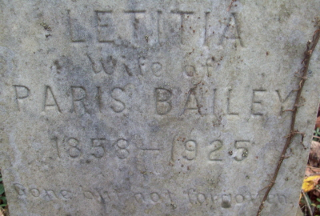

9 November 1855, Raleigh County, Virginia DOCUMENTED (her primary birth record; third of her parents' four documented children)
Died
24 September 1925, Raleigh County, West Virginia DOCUMENTED (Raleigh County Register of Deaths, 1925, p. 119, line 33: "Bailey Luesha," pneumonia, age 70; and her obituary, Raleigh Register, 25 September 1925, p. 1: died the previous evening after an illness of several years. An earlier note that the 24 September 1925 date belonged to Lula Bailey Warden is withdrawn — the register and the obituary both name Letitia herself)
Buried
Warden Cemetery, Sweeneysburg, Raleigh County, West Virginia — funeral and interment 25 September 1925 DOCUMENTED (her obituary, Raleigh Register, 25 September 1925, p. 1: funeral services and interment at Warden cemetery that afternoon; her stone reads "LETITIA Wife of PARIS BAILEY 1856–1925" — the stone belongs to her second marriage and its 1856 birth year conflicts with her 1855 birth record. Find a Grave memorial 119998116 places her at Hurt Cemetery, Stanaford, which the obituary refutes)
Married
George Washington Bailey — 12 June 1872, Raleigh County, West Virginia SUPPORTED (marriage index); then Pyrrhus Paris Bailey — 24 November 1917 SUPPORTED (WikiTree contributor record; Find a Grave gives 25 November — a one-day conflict, flagged below)
Residence
Town District community around Beckley, Raleigh County, West Virginia SUPPORTED
Occupation
No occupation recorded in the research folder for her
Religion
Christian Church SUPPORTED (her obituary, Raleigh Register, 25 September 1925, p. 1)
Her parentage is supported the same way as her husband's — by compiled accounts, not by a record read here. One caution: the compiled Warden volume names Hughes's wife as "Susanna Stover" — that is Susan Ann Williams's mother, conflated one generation; the working line carries Susan Ann Williams (born 12 February 1838, Clear Fork, daughter of Susannah Stover). Find a Grave adds later married names for Susan (Baldenburg, Jordan) as a tree-level lead, not adopted here. Their own profile is built at their turn.
Pyrrhus was George's first cousin. His marriage to Letitia is compiled-grade in the research folder, and he was already attached as her second husband on Geni, WikiTree, and FamilySearch. WikiTree's contributor record gives 24 November 1917; Find a Grave gives 25 November 1917 — the day is conflicted by one day and is not settled here.
Children
Charles Henry Bailey (1873–1927) (married Annice Irene Hurt) SUPPORTED Mary J. "Mollie" Bailey (1875–1940) (married Robert Lee Trump, then Hugh A. Dunn) SUPPORTED Bertha Snow Bailey (1877–1942) (married George Henry Mellon) SUPPORTED Edna Bailey (31 August 1880 – 19 October 1926; married James Emmette Hurt) DOCUMENTED — the direct line Bernard Bailey (1882–1929) (married Bertha Blanche Warden) SUPPORTED Lillie Bailey (1884–1961) (married Lewis R. Hager) SUPPORTED Edgar P. Bailey (1887–1932) SUPPORTED Wilmer W. Bailey (1889–1932) (married Hattie Mann) SUPPORTED Claude Bailey (1891–1960) SUPPORTED Ash Bailey (1893–1932) SUPPORTED Grace Bailey (1897–1952) SUPPORTED Jean Bailey (1899–1977) SUPPORTED
The roster is verified and complete at twelve; no twins. All twelve were born in Raleigh County. Geni links nine of them; Claude, Grace, and Jean have no linked profiles on Geni, though George's Geni About text names Claude Bailey, Grace M Bailey Lares, and Lou Jean Bailey Lamb among the twelve — Lou Jean is the folder's Jean. Geni's "Lilly Bailey" is the folder's Lillie (George's About text calls her "Lillie May Bailey"), and Geni's "Ashley Bailey" is the folder's Ash (by elimination against the About list and by name form). Edna's birth is verified by the Raleigh County birth register (p. 86).
Siblings
Alexander W Warden (1853–1907) SUPPORTED Martha Ann Warden Quesenberry (1854–1919) SUPPORTED John Thomas Warden (1857–1935) SUPPORTED Hughes Jefferson "Jeff" Warden Jr (1862–1910) SUPPORTED
All four are named as her siblings on her Find a Grave memorial; none is shown on Geni. With Letitia that makes five children, against the research folder's four documented children — the discrepancy is not resolved here.
9 November 1855 · age 0 Born, Raleigh County, Virginia DOCUMENTED (primary birth record; third of her parents' four documented children)
12 June 1872 · age 16 Married George Washington Bailey, Raleigh County, West Virginia SUPPORTED (marriage index; his obituary gives the marriage year as 1871 — see Research Notes)
1873–1900 Twelve children born, all in Raleigh County, including Edna (31 August 1880) — the direct line SUPPORTED
12 October 1916 · age 60 Widowed by George's death SUPPORTED
24 November 1917 · age 62 Married Pyrrhus Paris Bailey, George's first cousin SUPPORTED (WikiTree contributor record; Find a Grave gives 25 November)
24 September 1925 · age 69 Died after an illness of several years; funeral and interment at Warden Cemetery the next day DOCUMENTED (death register and obituary)
Life Story
Letitia "Tisha" Warden was born 9 November 1855 in Raleigh County, Virginia, the daughter of Hughes Jefferson Warden and Susan Ann Williams, and the third of their four documented children. Her birth is documented by a primary birth record. On 12 June 1872, in Raleigh County, she married George Washington Bailey, son of Sparrel Bailey and Mary Jane Tyree. Together they had twelve children, all born in Raleigh County: Charles Henry, Mary J. "Mollie," Bertha Snow, Edna — the direct line — Bernard, Lillie, Edgar P., Wilmer W., Claude, Ash, Grace, and Jean. Her son Charles Henry married Annice Irene Hurt, and her daughter Edna married James Emmette Hurt, so the Bailey and Hurt lines crossed twice.
George died 12 October 1916. After his death, Letitia married his first cousin Pyrrhus Paris Bailey, on 24 November 1917 by WikiTree's contributor record (Find a Grave gives 25 November — the day is conflicted by one day). Her obituary calls Paris a cousin of her first husband. She was a member of the Christian Church, and was remembered as a loving mother, a good wife, a sympathetic friend and neighbor. She died 24 September 1925, after an illness of several years, and was buried at Warden Cemetery the next day; her stone reads "LETITIA Wife of PARIS BAILEY 1856–1925" — the stone belongs to her second marriage, and its 1856 birth year conflicts with her 1855 birth record. An earlier note on this page that the 24 September 1925 date belonged to Lula Bailey Warden was wrong, and is withdrawn: the death register and the obituary both name Letitia herself.
Her portrait, shown here, comes from her Find a Grave memorial (photograph by Cynthia Benon, 2018), pulled in full from the memorial on 5 November 2026, as does her gravestone photograph in the gallery below (photograph by historianne, 2013). Her obituary clipping and the two register-book pages from the memorial are filed in the research folder and cited below.
Photo Gallery

Her gravestone, "LETITIA Wife of PARIS BAILEY 1856–1925" — the stone belongs to her second marriage; its 1856 birth year conflicts with her 1855 birth record
Sources and Evidence
Primary birth record, Raleigh County, Virginia, 9 November 1855: Letitia Warden, daughter of Hughes Jefferson Warden and Susan Ann Williams; third of the couple's four documented children DOCUMENTED (Register of Births, Raleigh County, year ending 31 December 1855, line 21; register page image in the couple folder)
Marriage index, Raleigh County, West Virginia, 12 June 1872: George Washington Bailey married Letitia Warden SUPPORTED
Raleigh County birth register (p. 86): Edna Bailey, born 31 August 1880, daughter of George Washington Bailey and Letitia Warden — verifies Edna as their daughter DOCUMENTED
WikiTree contributor record: Letitia married Pyrrhus Paris Bailey 24 November 1917 (compiled-grade in the research folder; he was already attached as her second husband on Geni, WikiTree, and FamilySearch) SUPPORTED
Geni profiles, click-verified 4 November 2026: Letitia "Tisha" Bailey (Warden) (born 9 November 1855, Raleigh; no death field — the 24 September 1925 date is gone; burial place Beckley shown, tree-level, not adopted here); daughter of Hughes Jefferson Warden and Susan Ann Warden (Williams); wife of George Washington Bailey and Pyrrhus "Paris" Bailey; mother of the same nine linked children as George's profile SUPPORTED
Find a Grave memorial 119998116, Letitia Warden Bailey: born 9 November 1855, Raleigh County; died 24 September 1925 (aged 69), Raleigh County; daughter of Hughes Jefferson Warden and Susan Ann Williams Warden Baldenburg Jordan (1838–1901); married George W Bailey 12 June 1872, then Pyrrhus/Paris Bailey 25 November 1917; gravestone reads "LETITIA Wife of PARIS BAILEY 1856–1925" (the memorial's own note says the birth year appears incorrect on the gravestone). The memorial's 24 September 1925 death date is confirmed by the death register and the obituary below; its Hurt Cemetery, Stanaford burial is refuted by the obituary (Warden Cemetery); Susan's later married names are a tree-level lead SUPPORTED
Obituary, "Mrs. Bailey Dies," Raleigh Register, Beckley, Raleigh County, West Virginia, Friday, 25 September 1925, p. 1 (Find a Grave memorial 119998116, photograph of the clipping, pulled in full from the memorial on 5 November 2026): Mrs. Paris Bailey died the previous evening after an illness of several years; twice married, first to George Bailey, then to Paris Bailey, a cousin of her first husband; member of the Christian Church; funeral services and interment at Warden cemetery that afternoon. The surviving children it names are Mrs. Hugh A. Dunn, Mrs. Geo. H. Mellon, Mrs. J. Lillie Bailey, Mrs. Albert Lares, Miss Lillie Bailey, Dr. Edgar Bailey, C. H. Bailey, Claude Bailey, B. B. Bailey, Mrs. Emmett Hurt, and Ash Bailey — eleven of the twelve; Wilmer W. is not named, and "Mrs. J. Lillie Bailey" is not matched to a child with confidence (see Research Notes) DOCUMENTED
Raleigh County Register of Deaths, year 1925, p. 119, line 33: "Bailey Luesha," white, female, died 24 September, pneumonia, age 70, married, Dr. B. B. Richmond (register page image in the couple folder) DOCUMENTED
Ancestry tree "Tricia's Shamblen/McKinney Family Tree" (tree 44342901), "Lutitia Bailey-Warden" (person 6189644179): born 9 November 1855, Raleigh; married 12 June 1872, Raleigh; death "22 Dec" with no year (a source-dialog header rendered "1855–2001," which is not a verified year); burial Stanaford; parents Robert Warden × Nancy White (conflicts with the folder); children the same twelve names, with duplicates (Lillie Baily and Lillie Bailey; Jean Bailey and Jean Baily). Nothing from it is adopted SUPPORTED
Research Notes and Open Questions
Grades on this page: DOCUMENTED means an original record was read (her birth record, Edna's birth register entry, her death register entry, her obituary); SUPPORTED means a claim attested by filed research — the marriage index, the WikiTree contributor record, Geni and Find a Grave checks — but not by a register read here; UNPROVED means a claim with no corroboration found.
Death: 24 September 1925, pneumonia, age 70 — Raleigh County Register of Deaths, 1925, p. 119, line 33 ("Bailey Luesha"), and her obituary, Raleigh Register, 25 September 1925, p. 1 ("died yesterday evening"). An earlier note on this page said the date belonged to Lula Bailey Warden and reached Letitia by a copying error, and that it had been removed from Geni, WikiTree, Ancestry, and FamilySearch in October 2026; that was wrong, and is withdrawn — the register and the obituary both name Letitia herself, and the date is restored here. The Ancestry tree's death of "22 Dec" with no year (a source-dialog header rendered "1855–2001," which is not a verified year) is not adopted. Her obituary names eleven surviving children; Wilmer W. is not named, and its "Mrs. J. Lillie Bailey" is not matched to a child with confidence — Lou Jean is the only unaccounted daughter, but her married name was Lamb. The obituary calls Lillie "Miss Lillie Bailey" though the folder has her married to Lewis R. Hager; the obituary appears to use maiden names for the daughters.
Burial: Warden Cemetery, Sweeneysburg, Raleigh County — her obituary, Raleigh Register, 25 September 1925, p. 1, says funeral services and interment were held at Warden cemetery that afternoon. Find a Grave memorial 119998116 places her at Hurt Cemetery, Stanaford, which the obituary refutes; the Ancestry tree's Stanaford burial claim rests on the same Find a Grave Index source and is likewise not adopted. Her stone reads "LETITIA Wife of PARIS BAILEY 1856–1925" — the stone belongs to her second marriage, and its 1856 birth year conflicts with her 1855 birth record (the memorial's own note says the birth year appears incorrect on the gravestone).
Second marriage: Pyrrhus Paris Bailey, George's first cousin, married 24 November 1917 by WikiTree's contributor record; Find a Grave gives 25 November 1917. The day is conflicted by one day and is not settled here. The marriage is compiled-grade in the research folder.
Marriage year: the marriage index gives 12 June 1872; his obituary says he was married in the year 1871. The year is not settled here.
Parents: Hughes Jefferson Warden × Susan Ann Williams, supported by compiled accounts. The compiled Warden volume names Hughes's wife as "Susanna Stover" — that is Susan Ann Williams's mother, conflated one generation; the working line carries Susan Ann Williams (born 12 February 1838, Clear Fork, daughter of Susannah Stover). Find a Grave adds later married names for Susan (Baldenburg, Jordan) as a tree-level lead, not adopted here. The Ancestry tree's parents for her (Robert Warden × Nancy White) conflict with the folder and are not adopted.
Name: the Ancestry tree spells her "Lutitia Bailey-Warden"; no "Letitia" or "Tisha" spelling appears on that profile. The folder's spelling is Letitia "Tisha" Warden, used here.
Children: the roster is verified and complete at twelve, no twins, all born in Raleigh County. Geni links nine; Claude, Grace, and Jean have no linked profiles, though George's Geni About text names Claude Bailey, Grace M Bailey Lares, and Lou Jean Bailey Lamb — Lou Jean is the folder's Jean. Geni's "Lilly Bailey" is the folder's Lillie; Geni's "Ashley Bailey" is the folder's Ash. The Ancestry tree's twelve-child roster matches the folder's twelve names, with duplicates (Lillie Baily and Lillie Bailey; Jean Bailey and Jean Baily) reported as shown, not resolved; its years (1873–1971) are tree-level and are not used here. Find a Grave's child lists on both memorials agree on the twelve years (1873–1977); those years are carried on the Children card above at memorial grade.
Siblings: her Find a Grave memorial names four siblings — Alexander W Warden (1853–1907), Martha Ann Warden Quesenberry (1854–1919), John Thomas Warden (1857–1935), and Hughes Jefferson "Jeff" Warden Jr (1862–1910). With Letitia that makes five children, against the folder's four documented children; the discrepancy is not resolved here, and no sibling is shown on Geni.
Photographs: her portrait (Find a Grave, photograph by Cynthia Benon, 2018) is placed above as the profile picture, and her gravestone photograph (Find a Grave, photograph by historianne, 2013) is in the gallery below. Both were first placed as crops from phone screenshots of the memorial, as Find a Grave blocked the browser's pull site-wide with no interactive challenge; the originals were pulled in full from the memorial on 5 November 2026 and now serve the page. The memorial's other four photographs are now in the couple folder: a second grave photograph (the same stone, wider view, filed only), her obituary clipping, and the two register-book pages (her 1855 birth entry and her 1925 death entry), filed and cited, not shown as gallery figures. The two contextual photographs in the research folder (coal miners at Gary, 1908; Raleigh County courthouse, 2007) are not shown.
Open items: George's death place and cause at record level; the Franklin County, Virginia marriage bond for Sparrel Bailey × Mary Jane Tyree (about 1832).
Genes Reunited is deferred to a later pass, so no Genes Reunited tile is shown here.
The family couple profile's research-folder link pointed to a trashed folder; this page links the live research folder.
Profile history: Created 4 November 2026 from the family couple profile and research notes.